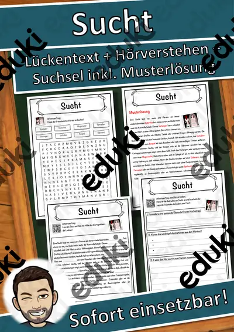

Sucht, Drogen und Prävention: Arbeitsblätter für Klasse 7–10 (Biologie)
Suchtprävention gehört in den Biologie- und Gesundheitsunterricht der Sekundarstufe I. Behandelt werden Wirkung und Risiken von Alkohol, Nikotin und anderen Substanzen sowie Wege der Hilfe.
Im Unterricht begegnen den Lernenden zuerst Alkohol und Nikotin. Wer weitergeht, behandelt Cannabis, Abhängigkeit, Medikamente sowie Hilfsangebote.
Die Lehrpläne der Länder sehen das Thema im Fach Biologie vor, in der Regel in der Sekundarstufe I (Klasse 7–10). Als Ziel gilt: die Jugendlichen kennen Risiken und wissen, wo sie Hilfe finden.
Ob Vertretungsstunde, Stationenarbeit oder Hausaufgabe: Die Arbeitsblätter zu Sucht, Drogen und Prävention lassen sich flexibel einsetzen, etwa mit Alkohol als Auftakt und Hilfsangebote als Abschluss. Musterlösungen sparen die Korrekturzeit. Zur Differenzierung eignen sich die Lesespurgeschichten mit ihren drei Niveaustufen.
Aus unserem Katalog gehören 47 Materialien zu diesem Thema, darunter Materialpaket Drogen, Rauchen und Vapes und Sucht Lückentext mit Wortspeicher Hörverstehen. Der Bestand umfasst 1 Lesespurgeschichte und 5 Lückentexte mit Hörverstehen und reicht über Klasse 6–10. Eine Beratungsstelle als Gast vermittelt Hilfsangebote glaubwürdiger als jedes Arbeitsblatt.
Das gehört zum Thema
Passende Arbeitsblätter und Materialpakete

Materialpaket Drogen - Drogenprävention - Steckbriefe Drogen

Rauchen und Vapes – warum Nikotin abhängig macht – Lesespurgeschichte mit Rätselaufgaben (Klasse 7)

Sucht Lückentext mit Wortspeicher Hörverstehen und Suchsel

Magersucht Lückentext mit Wortspeicher Hörverstehen und Suchsel

Medikament Lückentext mit Wortspeicher Hörverstehen und Suchsel

Droge Lückentext mit Wortspeicher Hörverstehen und Suchsel

Alkohol Lückentext mit Wortspeicher Hörverstehen und Suchsel

Steckbrief Droge Kokain – Drogenprävention

Steckbrief Droge Zigaretten – Drogenprävention

Steckbrief Droge Vape ohne Nikotin – Drogenprävention

Steckbrief Droge Tabakerhitzer – Drogenprävention

Steckbrief Droge Spice – Drogenprävention

Steckbrief Droge Speed – Drogenprävention

Steckbrief Droge Snus – Drogenprävention

Steckbrief Droge Shisha – Drogenprävention

Steckbrief Droge Schlafmittel – Drogenprävention

Steckbrief Droge Ritalin – Drogenprävention

Steckbrief Droge Research Chem – Drogenprävention

Steckbrief Droge Psilocybin – Drogenprävention

Steckbrief Droge Opioid – Drogenprävention

Steckbrief Droge NPS – Drogenprävention

Steckbrief Droge Meth – Drogenprävention

Steckbrief Droge MDMA – Drogenprävention

Steckbrief Droge LSD – Drogenprävention
Weitere 23 Materialien zum Thema im Material-Finder.
Häufige Fragen
Für welche Klassenstufe passen die Arbeitsblätter zu Sucht, Drogen und Prävention?
Der Schwerpunkt liegt auf Klasse 8; insgesamt deckt die Auswahl (47 Titel) Klasse 6–10 ab. In der Beschreibung jedes Materials steht die empfohlene Stufe.
Welche Inhalte decken die Materialien zu Sucht, Drogen und Prävention ab?
Die Materialien arbeiten an Alkohol, Nikotin und Cannabis und gehen dann weiter zu Abhängigkeit, Medikamente und Hilfsangebote. Vorab lohnt ein Blick in den Lehrplan des eigenen Bundeslandes.
Wie setze ich Sucht, Drogen und Prävention im Unterricht ein?
Eine Beratungsstelle als Gast vermittelt Hilfsangebote glaubwürdiger als jedes Arbeitsblatt. So entsteht aus den Blättern eine kleine Einheit, die sich auf zwei bis drei Stunden verteilen lässt.
Mehr Material nach Fach und Klasse
Verwandte Lehrplanthemen
- Genetik und Evolution (Biologie, Klasse 8–10)
- Atmung, Verdauung und Organe (Biologie, Klasse 5–9)
- Fische und Meerestiere (Biologie, Klasse 4–8)
- Fotosynthese (Biologie, Klasse 5–9)
- Herz und Blutkreislauf (Biologie, Klasse 5–9)